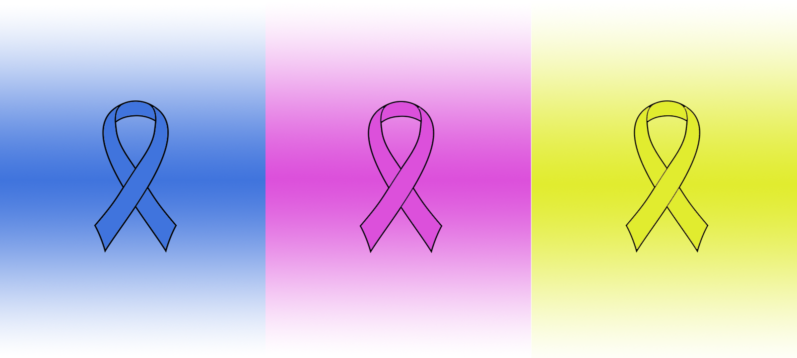
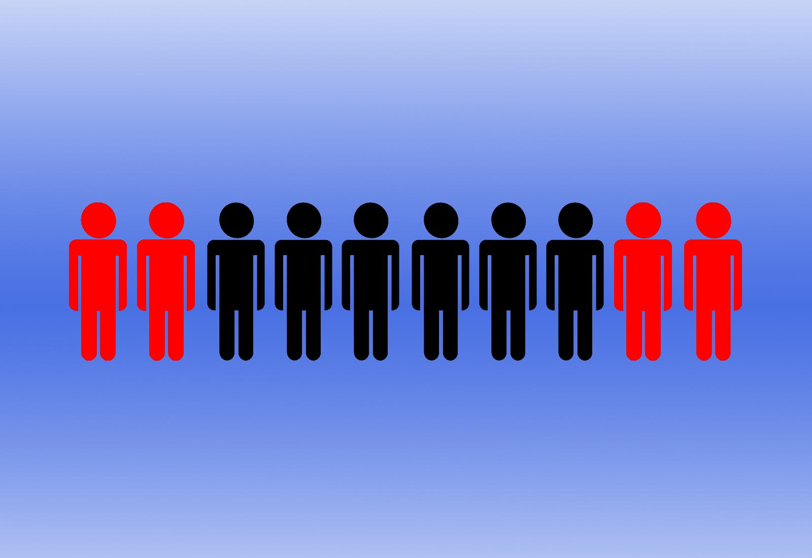
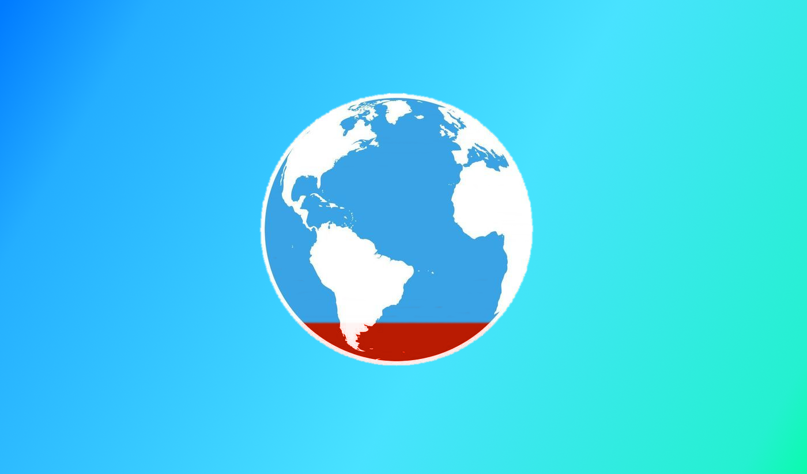

Cancer is one of the leading causes of death in the world
WHY?
Cancer, in all of its various forms, is responsible for well over
eight million deaths every year. And yet many remain uneducated about what they can do to help, or even if they should help at all. We developed this website
in an effort to address this issue, providing people around the world with a platform that allows them to maintain easy access to the fight against Cancer, especially the forms
that have gone woefully underresearched over the years.
There are currently over 200 types of known Cancer, which combined are responsible for 820,000,000 deaths worldwide each and every year. That's more than twice the number of people who die from AIDS, Malaria, and Tuberculosis combined. Current projections indicate that, unless immediate action is take, the global number of deaths could increase by a whopping 80% over just the next few decades.
And so we find ourselves confronted with a seemingly insuppressible obstacle. Cancer is not simply the enemy of those afflicted by it, it is the enemy of all of us. Cancer, in many respects, stands alone as the sole Demon that has reached into all of our lives in some way, drawing us together even as it attempts to force us apart. While the sitatuion certainly may seem bleak at times, recent years have brought with them innovative new research that has already saved tens of thousands of lives. This website, beyond educating people about the issue, exists to promote the impactful steps that those leading the charge are taking to develop a healthier, happier world for us to exist in.
There are currently over 200 types of known Cancer, which combined are responsible for 820,000,000 deaths worldwide each and every year. That's more than twice the number of people who die from AIDS, Malaria, and Tuberculosis combined. Current projections indicate that, unless immediate action is take, the global number of deaths could increase by a whopping 80% over just the next few decades.
And so we find ourselves confronted with a seemingly insuppressible obstacle. Cancer is not simply the enemy of those afflicted by it, it is the enemy of all of us. Cancer, in many respects, stands alone as the sole Demon that has reached into all of our lives in some way, drawing us together even as it attempts to force us apart. While the sitatuion certainly may seem bleak at times, recent years have brought with them innovative new research that has already saved tens of thousands of lives. This website, beyond educating people about the issue, exists to promote the impactful steps that those leading the charge are taking to develop a healthier, happier world for us to exist in.
Thank You.
Zachary Jordan, Ishan Talapia, Varun Mark Pinto, Bissem Gill

Over 11 people die from Cancer every minute.
WHO?
Cancer is something that impacts us all, subtly interweaving itself into our lives despite our best efforts to stop it.
Recent data has indicated that over 40 percent of people will develop some form of Cancer
over the course of their life. Additionally, nearly one in every four deaths
in the United States stems from Cancer. The figure is frightening to say the least. However, the impacts of Cancer are not mutually exclusive to those actively fighting it.
We have all been touched by Cancer in some way, be it through our friends, through our neighbors, or even through a story that we hear in passing on the news. Even so, Cancer remains little more than a number for many of us - an unpleasant statistic that we shudder at for a moment before moving forward with our lives. To provide ourselves with a sense of context, we must first take a look at how Cancer compares to some other tragedies.
We have all been touched by Cancer in some way, be it through our friends, through our neighbors, or even through a story that we hear in passing on the news. Even so, Cancer remains little more than a number for many of us - an unpleasant statistic that we shudder at for a moment before moving forward with our lives. To provide ourselves with a sense of context, we must first take a look at how Cancer compares to some other tragedies.
Deaths per year in the United States

4 IN 10 PEOPLE WILL EVENTUALLY GET CANCER
HOW?
The relentless march of scientific advancement has brought to light astonishing new research that has changed the face of the problem entirely.
No longer is a Cancer diagnosis a death sentence - it is an extremely treatable problem and one that millions of people have overcome in recent years.
In fact, over 75 percent of children diagnosed with cancer live past the first five years, a period of time considered by many to mark significant recovery.
This website serves as both an educational tool and a resource for spreading the word about the exciting projects that people everywhere can contribute to. We don't intend to change the world with this website. We are merely people - the same as you - doing what we can to fix a problem that weighs heavily on us all. This is a war that will be won through the little victories. There is no singular answer to this problem, no magical solution to end the suffering - only little pieces that together form a cohesive whole.
Your contribution to the fight can start right here. Visit our diseases page to learn more about the various types of Cancer, and about what you can do to start changing lives today. The fight against Cancer can and will be won through the concentrated application of our collective will to overcome. It's about time we made a difference. Let's get started.
This website serves as both an educational tool and a resource for spreading the word about the exciting projects that people everywhere can contribute to. We don't intend to change the world with this website. We are merely people - the same as you - doing what we can to fix a problem that weighs heavily on us all. This is a war that will be won through the little victories. There is no singular answer to this problem, no magical solution to end the suffering - only little pieces that together form a cohesive whole.
Your contribution to the fight can start right here. Visit our diseases page to learn more about the various types of Cancer, and about what you can do to start changing lives today. The fight against Cancer can and will be won through the concentrated application of our collective will to overcome. It's about time we made a difference. Let's get started.

NEARLY 13 PERCENT OF ALL DEATHS ARE FROM CANCER
NOW.
This is a change that can and should start with you, right now. The stories button will will direct you to individualized people that need your help. The diseases button will allow you to grasp the context that cancer patients must deal with everyday, as well as provide you with the opportunity to donate to charities that have the potential to change the face of cancer research. The FAQ button will take you to a page that outlines the answers to common questions that people may have, both about cancer and this website in general.